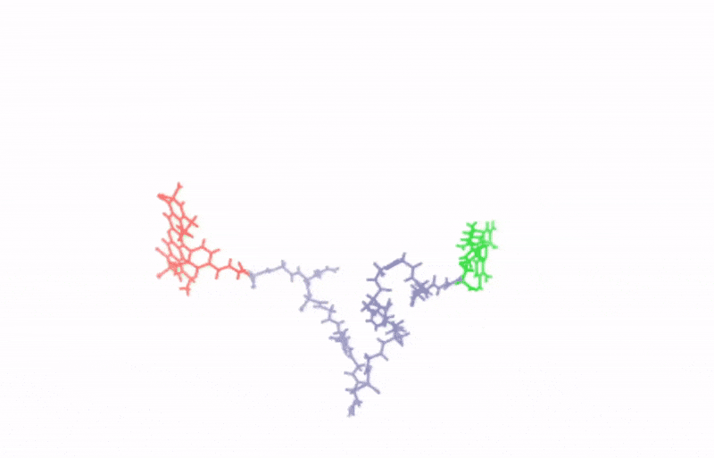
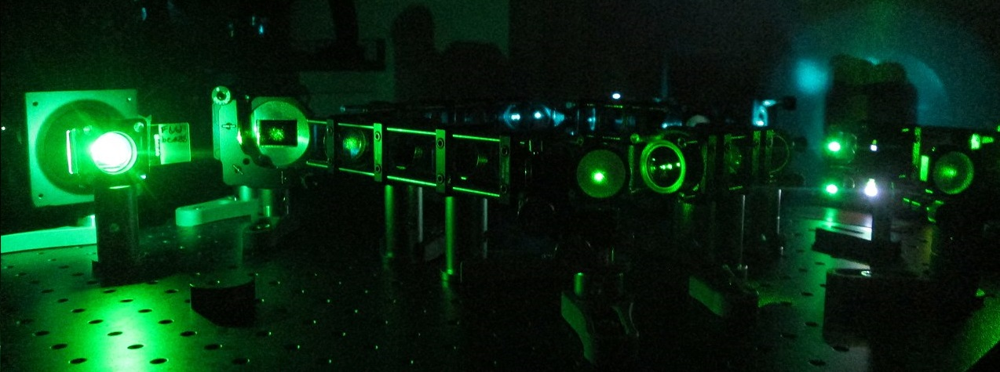

We are not fully satisfied with current views of how life works. They are powerful, but incomplete. Consider, for instance, the coherence of the molecular processes that occur within a single cell. While these processes can be reduced into parts and analyzed individually, they operate as a whole, and it is this wholeness that produces what we call life. It's prodigious(!) With the tools now available, we see the exploration of this gap, between parts and whole, as one of the most exciting frontiers in science. Through it, we hope to better understand life and open new paths toward understanding disease.

What we like to do
We work in experimental biophysics, focusing on single-molecule fluorescence. We combine this with meso- and macro-scale experiments to link molecular processes to emergent behavior, and we integrate computation and theory to interpret and extend our observations.

The Lab led by Nicola Galvanetto opened in March 2026 at the Institute of Structural Biology (IBS) in Grenoble. I'm currently setting up the lab and recruiting postdocs, PhD students, and Master's students. If you're excited by single-molecule experiments and quantitative biophysics, email me.
